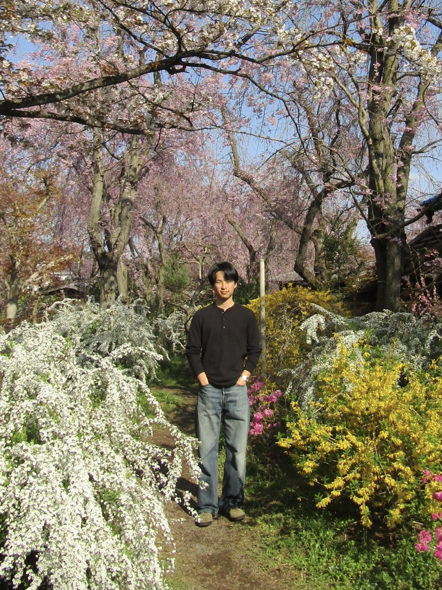
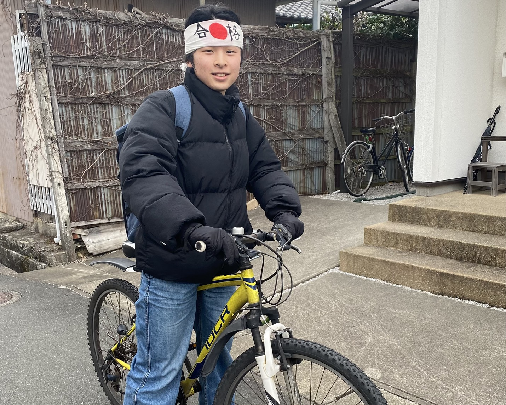
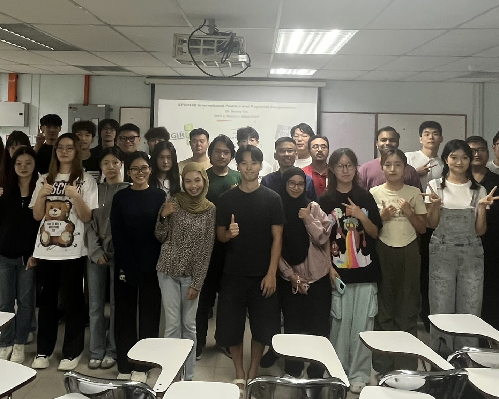
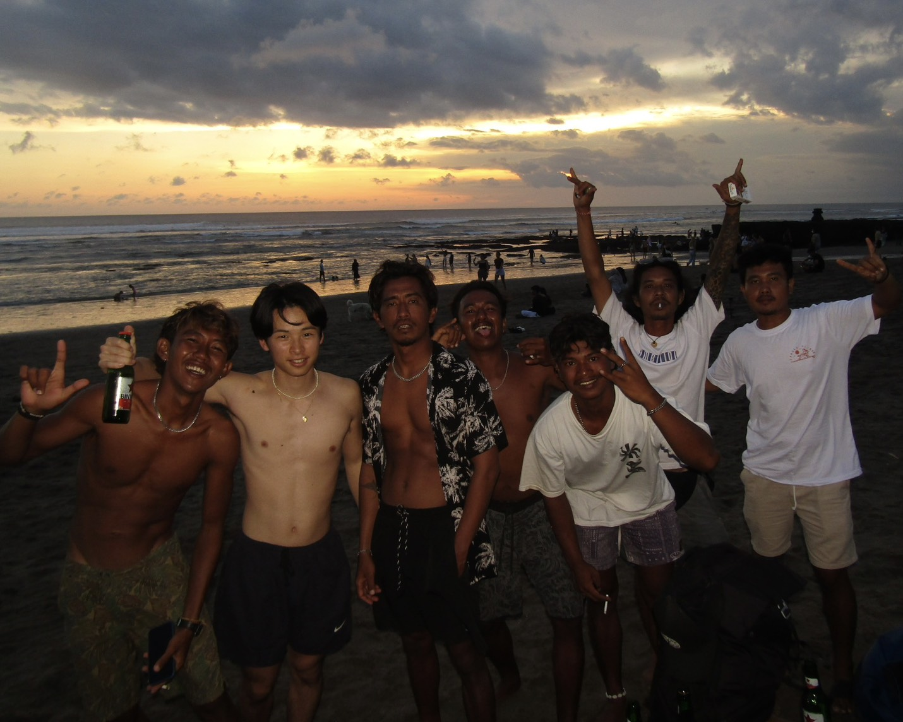

PROFILE

高柳遥真
２００３年１２月１１日生まれ 静岡県出身
大学在学中にノマドワーカーになることを決意し休学しノマドの聖地バリへ移住。現在HTML、CSSを学習し案件獲得を目指す毎日。勉強の傍らサーフィンにも取り組み今年中にショートボードデビューを目指す。好きな言葉はかます。パッションだけは誰にも負けない自信がある。
HISTORY

浪人
一年間武田塾に通い大学受験に臨む。偏差値を一年で３０上げ立命館大学国際関係学部に合格する。一日平均１３時間の勉強に加え一切のsnsを削除し社会から孤立。そんな時助けてくれたのは家族と友達だった。この浪人があったからこその人への感謝や尊敬を覚えることができたと感じている。

大学
大学では様々な人と出会いいろいろな価値観に触れた。特に大学二回生から参加した交換留学ではマレーシアで多くの刺激を受けた。いろいろな背景を持つ人たちと交流する中でもっと世界中旅したいと考えノマドワーカーになることを決意し、HTML,CSSの勉強を開始。

現在
インドネシアのバリ島がノマドの聖地と聞きバリへの移住を決意する。すべての費用を自分自身で工面し毎日節約の日々。現在バリのチャングーという場所に拠点を移し毎日勉強やサーフィンをし夢の実現を目指し日々奮闘している。
SKILLS
・HTML/CSS:レスポンシブ対応（スマホ対応）を含めたコーディングが可能です。
・WordPress:既存テーマのカスタマイズやブログの立ち上げが可能です。
・英語講師の経験もあるため海外情報のリサーチも可能です。
WORKS
自分自身のスキルを伝えるためのサイトになります。黒を基調としたモダンなデザインに仕上げました。
CONTACT
お気軽にご相談ください！
サイト制作依頼はもちろんバリでの生活などの情報交換も大歓迎です。24時間以内に返信いたします！